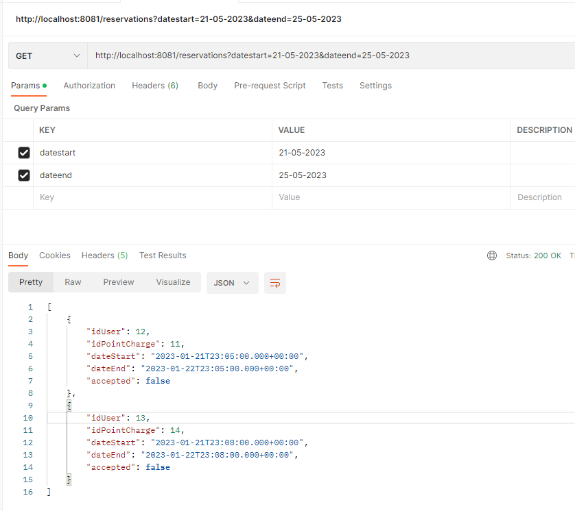
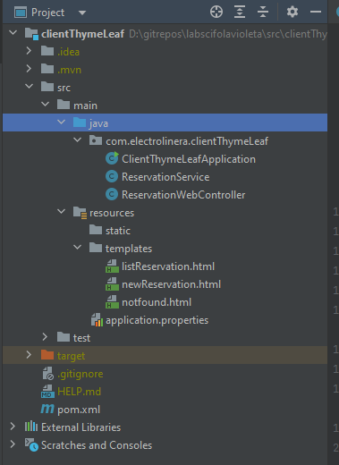
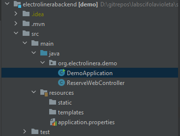
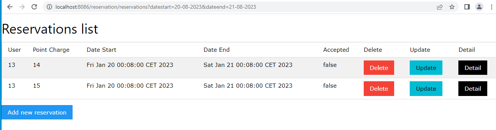

flowchart LR A[Client] --> B[reservation/reservations] --> C[Backend] C --> D[reservations]
I use a library to define the model. I use two springboots: one to do the query and another to response. The client is on port 8086 and the backend on port 8001
flowchart LR A[Client] --> B[reservation/reservations] --> C[Backend] C --> D[reservations]
http://localhost:8086/reservation/reservations?datestart=20-08-2023&dateend=21-08-2023



